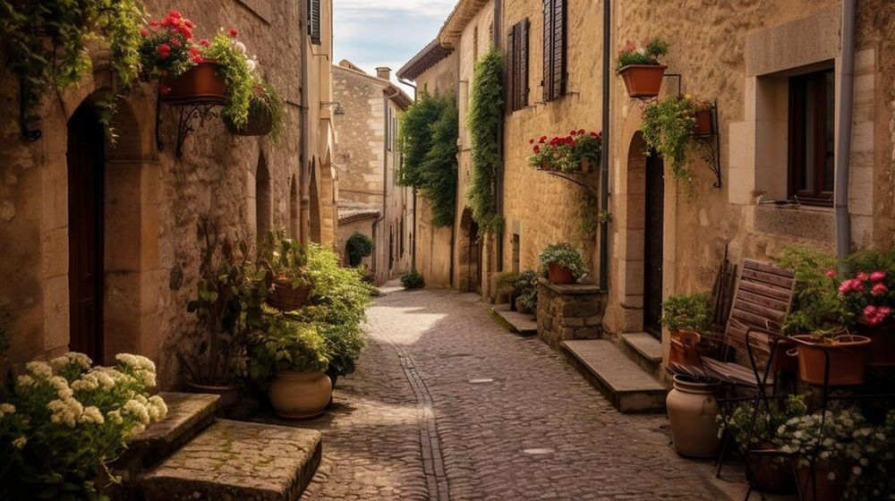

Descoperă Matera - O bijuterie rupestră în sudul Italiei
Matera este un oraș unic în Italia, renumit pentru peisajele sale rupestre și istoria sa bogată:
-

Sassi di Matera - Case rupestre
O rețea de case și biserici sculptate în stâncă, cu origini vechi de mii de ani.
-

Catedrala - Bijuterie arhitecturală
O catedrală impresionantă, situată pe o stâncă, cu elemente arhitecturale diverse.
-

Străzile vechi - Piatra în viața cotidiană
Străzi înguste și pitorești care dezvăluie farmecul autentic al orașului.
-

Gastronomia locală - Arome autentice
Bucătăria din Matera oferă specialități precum pâinea "pane di Matera" și "orecchiette" cu bróccoli.
-

Puncte de belvedere - Priveliști uimitoare
Panorame spectaculoase asupra orașului și peisajului rupestru.
Concluzii
Matera este un loc de neuitat, unde istoria și natura se întrepătrund într-un mod unic.